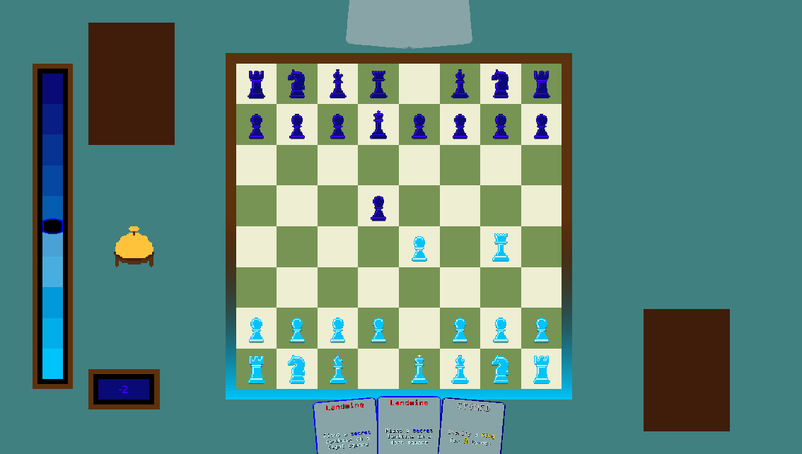
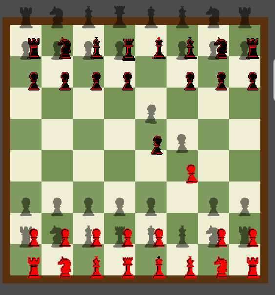

Return to homepage
UNDER DEVELOPMENT
ChessFight
ChessFight is a chessgame with cards, spend control points to play cards to get advantage in the battlefield.

A basic online match. (text is difficult to read on this low resolution gif)
The games central focus is on maintaining control over the board. The more Control Points you have the more cards you can play, the cost of a card depends on its rarity and if you have already played a card this turn (+2cp cost per previously played card).
Every chesspiece has a certain value, if you take a piece you gain cp equal to that value. You can also gain cp by discarding a card in your hand for its base value cost. If the control point indicator reaches all the way to your side of the table, you have lost the game. If its all the way on the other side of the table you have won the game.
The control point slider.

Winning the game by defeating the king which holds the highest value of the board.
By opening the rulebook players can adjust their color palette, using the colors of their currently played camp combined with the other players color palette from their camp.
These color palette don't just adjust the colors of the chesspieces but also of the board's turn refference, the text on the cards and the colors shown on the control point slider.

Showcase of synced colors between clients.
The game is currently supported by Steam Networking Sockets for the peer to peer networking. A heavy focus of the game is user generated content, so it is also compatible with steam's workshop API.
The game is very heavily data-driven, allowing for a lot of flexibility for users creating content. In the game workshop mods are refferenced to with the name cardpacks. Before a match starts you can choose as many cardpacks as you'd like, this can influence the following:
Custom board setups. (this can also include square modifiers on setup but isn't shown here)
Custom board setups with an asymmetrical grid are centered by using padding.
Custom cards with custom effects. (this includes stuff like custom rarities and custom card variations and custom shaders)
A simple JSON file currently allows you to make custom card, variations, rarities, shaders etc.

Custom chesspieces can be made with custom movement aswell. (the custom movement is a bit difficult to see here on a [1,2] board haha)
Custom chesspieces can have own custom sprites. (custom sprites can be transparent this one just isn't)
Custom effects can be made using only JSON file's aswell. This one locks a chesspiece in place for three turns.
Custom square modifiers in the shape of a smiley. (these can not only have effects when stepped on but can also affect the movement of chesspieces AKA their legal moves)
The same board setup but then making a smiley using smileys.
Custom scripts allow lots of control over the board, this one making the background transparent allowing to play on your desktop.
Cardpacks have additional control like dependencies, allowing mods to add upon other mods or allowing mods to set a base for others to expand upon.
The game originally was build in Unity before switching to Godot because of the Unity runtime fee controversy. I have put a demo using the Unity version online, if you want to try it out you can click here --> ChessFight
Here are some more clips troughout the development.
The chesspieces rotating way too much when holding them.
First implementation of the rulebook falling from the sky.
I don't even know what's happening here haha.
The addition of chesspieces wiggling and sweating if they are about to be attacked, also making them fall when taken.

On first launch of the game, the game creates a template mod that users can adjust.

Bug causing both the chesspiece and its shadow to be completely offset.